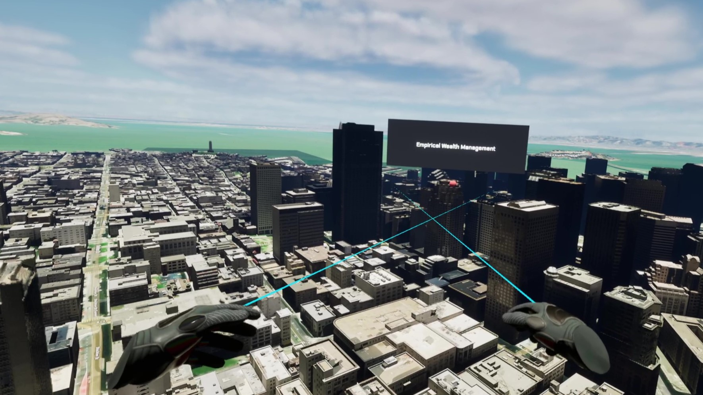
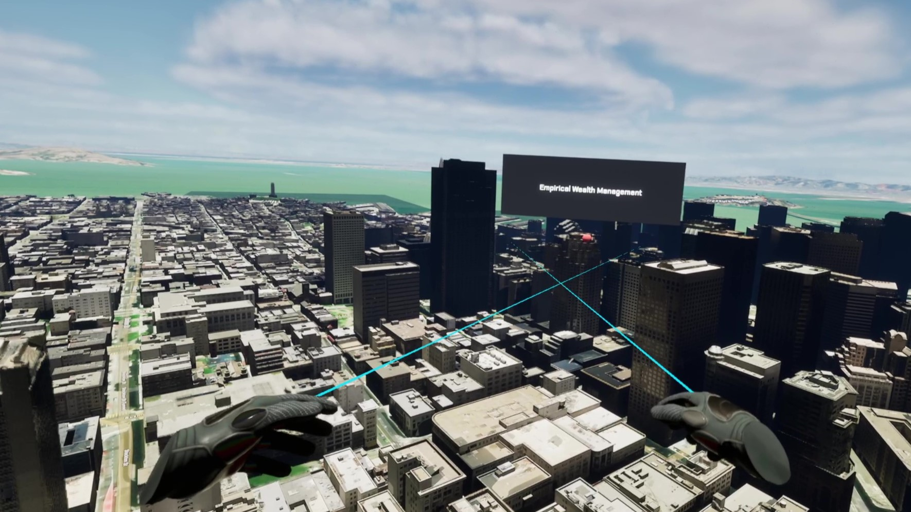

Mason Gaw.
Game and Software Developer.
My Name
My name is Mason Gaw. I recieved my Bachelors Degree in Game Design and Storytelling from Whittier College and my Masters Degree in Game Design and Development from Rochester Institute of Technology (RIT). I have been working at Esri as a Product Engineer on the Game Engines Projects specializing in XR development for the Meta Quest devices, Magic Leap, Hololens, and Apple Vision Pro. Below you will find some of my work from both school and professional. Please do not hesitate to contact me with questions.
Projects


 
